Начало
TapeDesk это четырёхдорожечная плёнка со звуковым движком, для iPhone и iPad. Если вы открываете его впервые, начните отсюда.
Что нужно
iPhone или iPad с iOS 17 или новее. На iPhone приложение работает в вертикальной ориентации. iPad можно поворачивать как угодно. Записывать можно встроенным микрофоном устройства или через аудиоинтерфейс по USB. Ни аккаунт, ни регистрация не нужны.
При первом запуске загружается демонстрационная плёнка demo. На ней четыре записанные дорожки в темпе 120 BPM. Это обычная плёнка, как все остальные. Её можно менять или удалить.
Приложение просит три разрешения. Микрофон нужен для записи, локальная сеть для поиска других приложений с Link, Bluetooth для подключения MIDI-контроллера. Никакие данные не собираются.
Два режима
TapeDesk может быть магнитофоном или грувбоксом. Режим выбирается в настройки ▸ приложение ▸ режим.
В режиме магнитофон есть плёнка и микс. В режиме грувбокс к ним добавляются синтезатор и экран дорожка, где вы играете и записываете одновременно. Смена режима меняет только то, что вы видите. Ваши плёнки остаются как были.
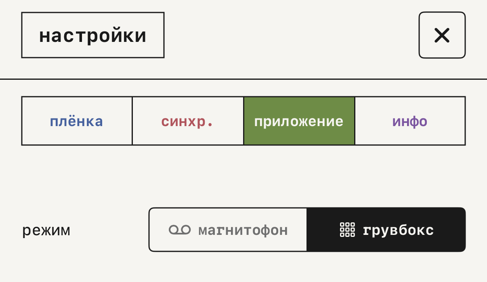
режим в настройках приложения.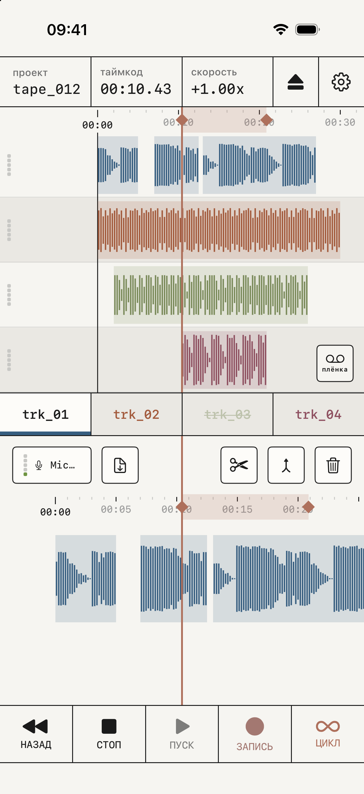
магнитофон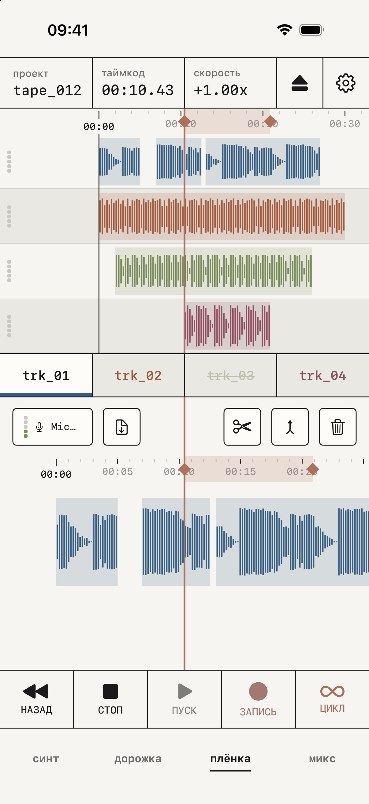
грувбоксЭкран
У экрана плёнки всегда одни и те же части. Сверху шапка. Под ней вся плёнка целиком, а ниже крупно показана взведённая дорожка, чтобы её редактировать. В самом низу транспорт и разделы.
Из шапки открываются другие экраны. Коснитесь проект, чтобы увидеть свои плёнки. Значок извлечения открывает экспорт, а шестерёнка открывает настройки.
Нижняя строка ведёт в четыре раздела: синт · дорожка · плёнка · микс.
Строки разделов нет. Между плёнкой и миксом вы переключаетесь переключателем в углу, над ним находится метроном.
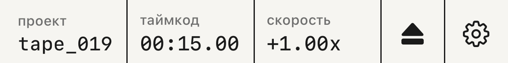
проект, таймкод и скорость.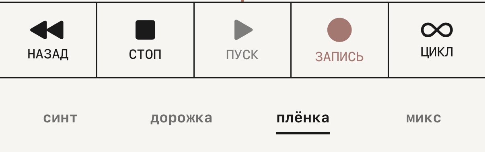
Первый дубль
- Коснитесь вкладки дорожки, чтобы взвести её.
- Нажмите
запись. Если плёнка стоит, звучит отсчёт и начинается запись. - Нажмите
стоп, когда закончите. - Нажмите
назад, чтобы вернуться в начало, ипуск, чтобы послушать.
Всё, первый дубль готов. Остальное понадобится постепенно.
Запись
Запись, которая начинается сама
Удерживайте запись, и появится фейдер порога от −60 до 0 dB. Запись начнётся сама, как только входной сигнал его перейдёт. Это удобно, когда вы записываетесь один и телефон лежит далеко.
запись, хлопок, и дубль начинается сам.Дорожки
На плёнке может быть от четырёх до шести дорожек. На iPhone новая плёнка создаётся с четырьмя, на iPad с шестью. Число меняется в дорожки, в настройки ▸ плёнка. На дорожку помещается 128 регионов, а на плёнку 10 минут.
Если при уменьшении числа вы убираете дорожку с записанными дублями, приложение просит подтвердить это двойным касанием той же цифры. Если вы ошиблись, под дорожки появляется отменить, и дорожка возвращается целиком.
Живой лупер
Когда луп включён, запись пишет поверх того, что уже звучит, ничего не стирая. На каждом круге добавляется новый слой. Когда вы нажимаете стоп, всё сводится в один луп.
Порог работает и здесь. Удерживайте запись и оставьте фейдер там, где нужно. Слой начнётся с первого удара. То, что вы сыграли перед тем, как сигнал перешёл порог, не теряется.
Если включены источники, каждый круг записывает все дорожки из сетки одновременно. Подробнее в разделе несколько источников сразу.
Несколько источников сразу
За один проход можно записать несколько дорожек, каждую со своим источником. Источник это синтезатор, микрофон телефона или отдельный канал аудиоинтерфейса. С одним только телефоном у вас уже два источника. Можно петь на одну дорожку, пока синтезатор пишется на другую.
Коснитесь кнопки входа, чтобы открыть панель мониторинга. В строке источник три клавиши: синт · вход · источники. Нажмите источники, и откроется сетка источник → дорожка.
Коснитесь дорожки, чтобы сделать её активной, а потом источников, которые хотите на неё направить. Один канал интерфейса может идти на несколько дорожек, и одна дорожка может принимать несколько каналов. Синтезатор может быть только на одной дорожке. Если назначить его на другую, он переедет туда. И каждая дорожка пишет либо синтезатор, либо вход, но не оба сразу.
При записи все дорожки с источником стартуют одновременно. После остановки у каждой остаётся свой новый регион. Так же работает обычная запись, запись в лупе и запись с порогом.
Сетка сохраняется вместе с плёнкой. Если открыть плёнку снова с тем же подключённым входом, сетка будет такой, какой вы её оставили. Чтобы снова записывать один источник, коснитесь синт или вход в той же панели.
Если дорожка не должна писать в следующем проходе, коснитесь её вкладки ещё раз, когда она уже взведена, и она перейдёт в safe. Она по-прежнему показывает, откуда приходит сигнал, но не записывает. Это тот же переключатель, что был на четырёхдорожечных магнитофонах.
Каналы интерфейса приходят с прямым усилением. Уровень выставляется на самом интерфейсе. Чтобы записывать синтезатор и голос одновременно, используйте проводные наушники. По Bluetooth звук приходит с задержкой, и выровнять их невозможно.
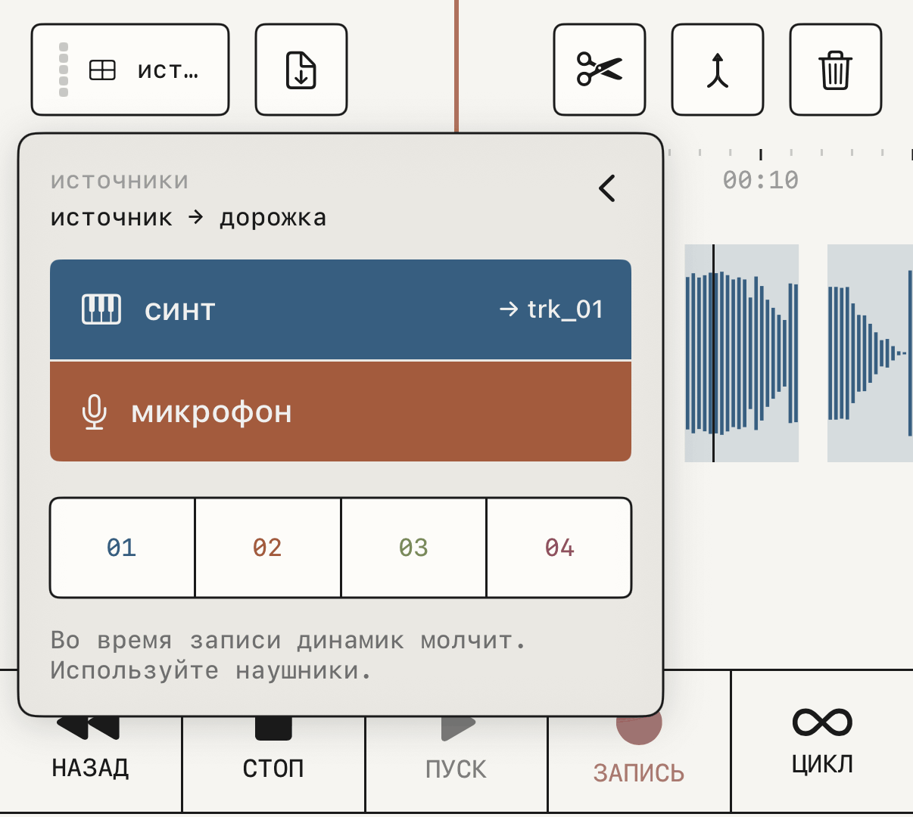
trk_01, микрофон на trk_02.Откуда приходит звук
Вход выбирает iOS. Пока не подключён интерфейс, используется микрофон устройства, а после подключения запись идёт с интерфейса.
Если вы слушаете через Bluetooth, мониторинг приходит с задержкой около 200 ms. Чтобы попадать в долю, используйте провод.
Если вы записываете встроенным микрофоном, а звук идёт в динамик, выход на время записи замолкает. Иначе микрофон снова записал бы то, что уже звучит. В наушниках всё слышно как обычно.
Если приложение закроется посреди дубля, при следующем запуске оно предложит восстановить эту запись. Звонок или Siri останавливают движок, и текущий дубль сохраняется до этого места.
Скорость и луп
Здесь скорость плёнки, перемотка пальцем и луп.
Скорость
Коснитесь скорость в шапке, и откроется вертикальный фейдер. 1.00x посередине, 2.00x вверху, 0.25x внизу. Высота звука поднимается и опускается вместе со скоростью, как на магнитофоне.
Под фейдером есть замок. Если замок открыт, после того как вы отпустите фейдер, скорость сама вернётся к 1x. Если закрыт, скорость остаётся там, где вы её оставили, и сохраняется с плёнкой.
Если записывать на плёнку, идущую с другой скоростью, дубль запоминает эту скорость и потом всегда звучит так.
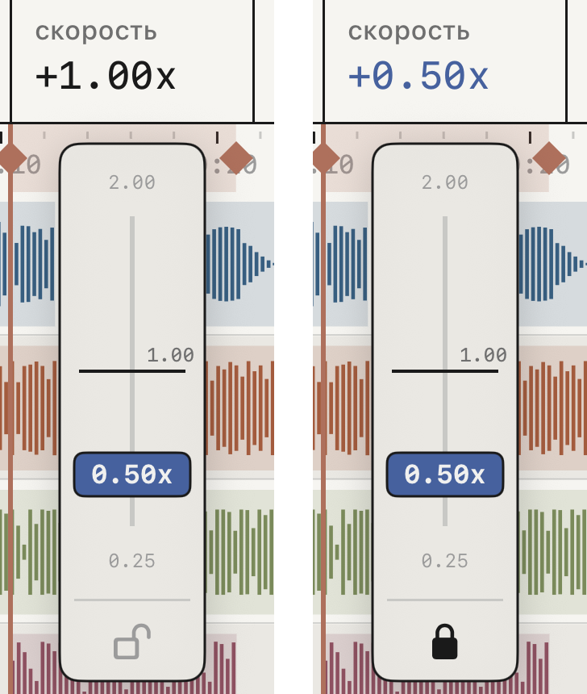
Перемещение по плёнке
назад возвращает в начало. Если удерживать пуск, назад работает как перемотка вперёд, пока вы его держите.
Чтобы попасть в нужное место, тяните взведённую дорожку пальцем. Когда плёнка стоит, курсор идёт за пальцем, как на виниле. Когда плёнка играет, скорость движения пальца меняет высоту звука.
Пока вы тянете, плёнка ощущается под пальцем. Каждая отметка на линейке даёт лёгкий толчок. Пронумерованные такты, края регионов взведённой дорожки и границы лупа дают толчок посильнее. Так курсор можно поставить точно на склейку, почти не глядя.
Луп
Тяните ручки на линейке, чтобы отметить начало и конец лупа. Он может быть длиной во всю плёнку. На стыке делается короткий кроссфейд, чтобы не было слышно щелчка.
Если выделен регион, цикл на панели правки подгоняет луп под этот регион.
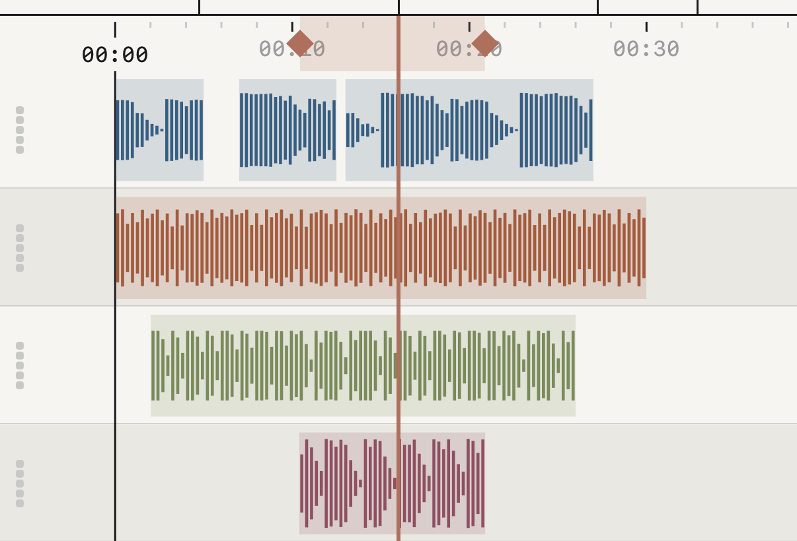
Правка
Каждый записанный дубль это регион. Здесь всё, что можно делать с регионами и дорожками.
Инструменты дорожки
Под вкладками дорожек есть строка инструментов.
- Кнопка входа открывает панель мониторинга.
- Значок документа импортирует аудиофайл на дорожку.
- Ножницы разрезают регион по курсору.
- Корзина одним касанием очищает взведённую дорожку, а
отменавсё возвращает.
Свести две дорожки в одну
свести объединяет две дорожки в одну, чтобы освободить одну из них. В режиме печать, включённом по умолчанию, в звук впечатываются фейдер, панорама и оба посыла на эффекты исходной дорожки. Потом эти регуляторы возвращаются в нейтральное положение, чтобы не применяться дважды. Уведомление это подтверждает.
Синтезатор грувбокс
Здесь звуковой движок. В нём одиннадцать движков синтеза, сэмплер и драм-машина. Играть на нём можно с клавиатуры, аккордами или секвенсором.
Выбор звука
Коснитесь верхней ячейки, где написаны движок и пресет. Откроется браузер: движки слева, их пресеты справа.
Сверху три семейства, синт · сэмплер · au, и звёздочка по звуку. по звуку группирует звуки по инструментам и хранит ваши избранные и папки.
Коснитесь пресета, и он загрузится сразу. Панель остаётся открытой, чтобы можно было сравнивать. Двойное касание загружает пресет и закрывает панель. Если вы можете потерять несохранённые сэмплированные звуки, приложение сначала спросит.
сохранить сохраняет звук в текущем виде как новый пресет. Удерживайте свой пресет, чтобы переименовать, вырезать или удалить его. Звёздочка отмечает его как избранный. Точка рядом с названием означает, что вы изменили звук и не сохранили его.
Звук каждой дорожки
Если вы не помните, с каким пресетом записали дорожку, плёнка это знает. Каждый раз, когда вы записываете синтезатор на дорожку, плёнка сохраняет звук, который тогда играл.
Он лежит в по звуку, в папке с названием плёнки. Внутри по строке на каждую дорожку, с её названием. Если снова записать на эту дорожку, её звук заменится новым.
Эти звуки принадлежат плёнке. В других плёнках их нет, и удаляются они вместе с ней. Чтобы сохранить такой звук, загрузите его. После сохранить он становится вашим пресетом, как любой другой.
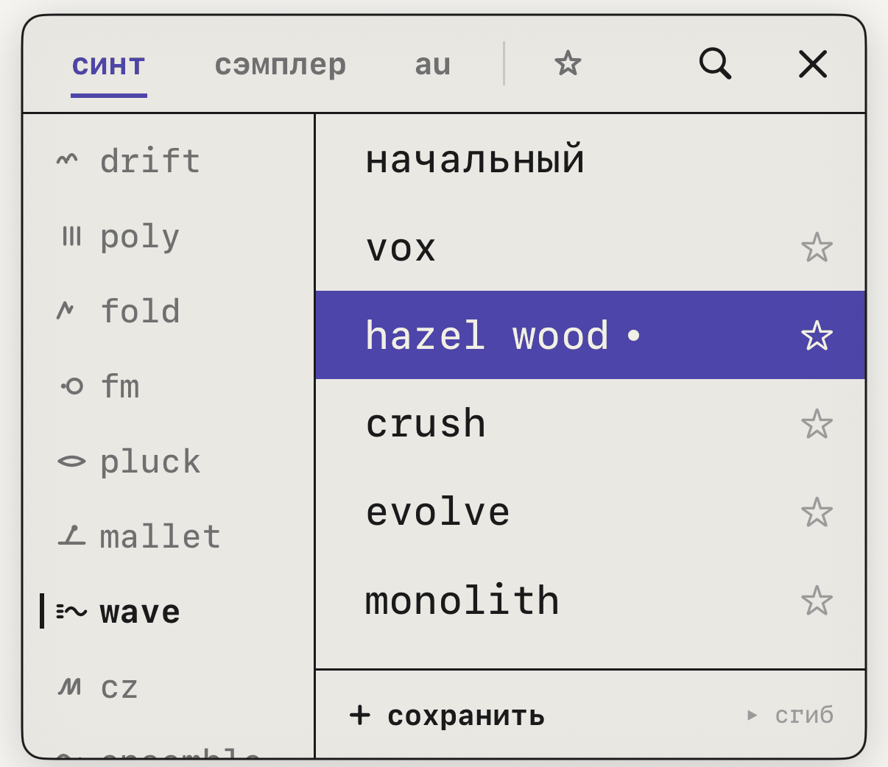
Настройка звука
Под названием звука пять вкладок, в каждой два ряда регуляторов.
- В
синтсверху четыре макро движка. Снизуголос(поли·моно·легато),скольжениеиуровень. огибающаярисует две огибающие, громкости и фильтра.- В
фильтрчастота среза и резонанс на одной кривой, тип фильтра и глубина, с которой его двигает огибающая. - В
модуляциядва LFO. Коснитесьцель, а потом регулятора, которым хотите управлять. Чтобы снять назначение, удерживайтецель. эффектыэто собственный эффект движка, отдельно от эффектов микса.
Регуляторы каждого движка и каждого эффекта описаны в карточках движков и в карточках инсертов.
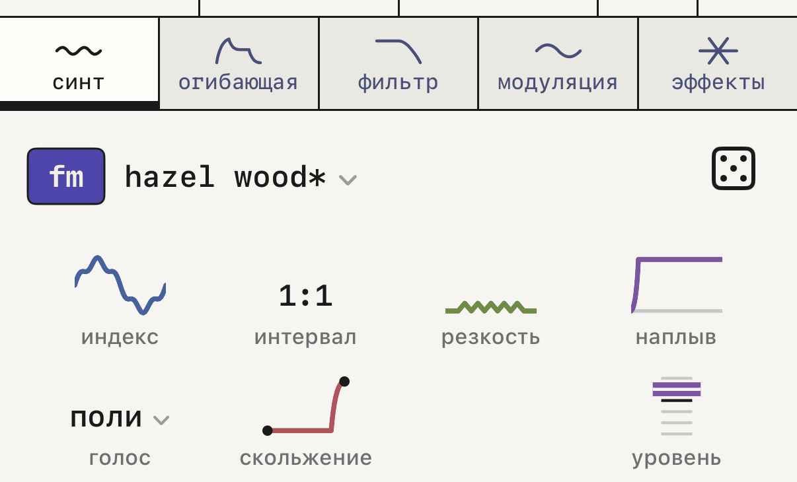
синт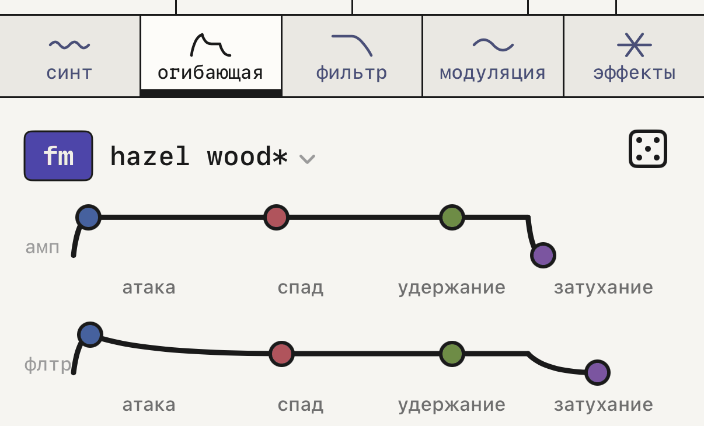
огибающая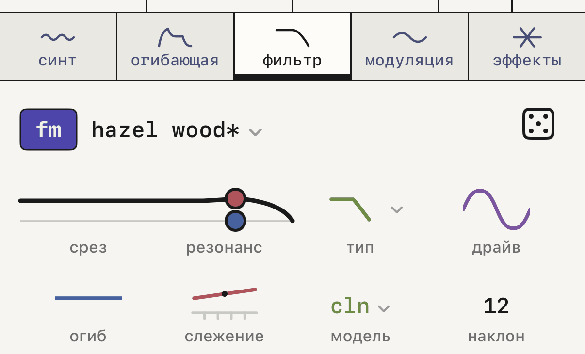
фильтр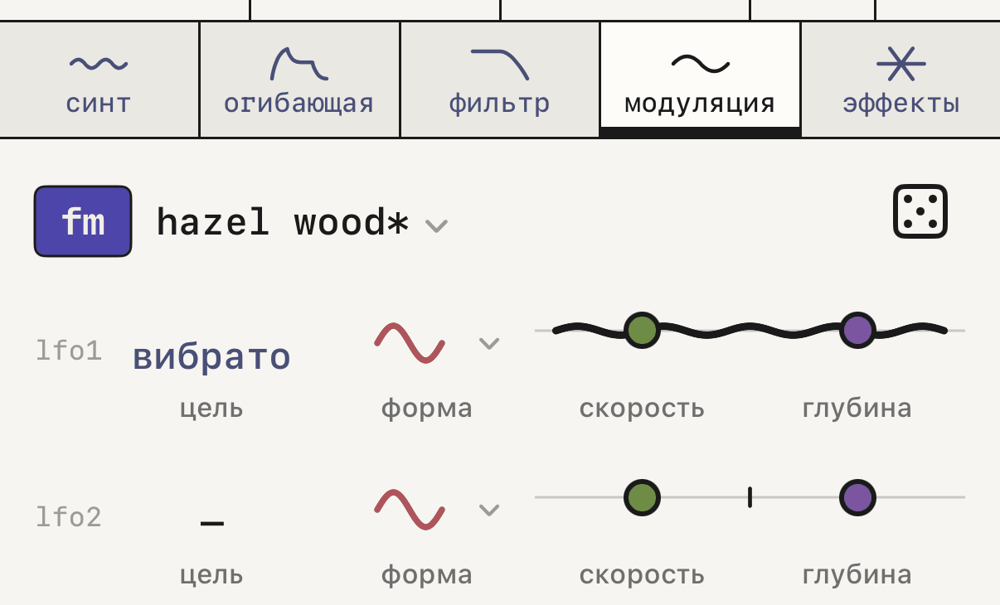
модуляцияКлавиши
Клавиатура играет только ноты активной гаммы. тоника и гамма выбираются прямо над ней. Встроенных гамм 14, свои можно создать в меню гамм. − и + переключают октаву.
Сила каждой ноты зависит от того, насколько плотно вы прижимаете палец, и от удара, который улавливает телефон. С Apple Pencil от силы нажатия. Если нужно, чтобы все ноты звучали одинаково, поставьте сила нажатия на 0 в настройках приложения.
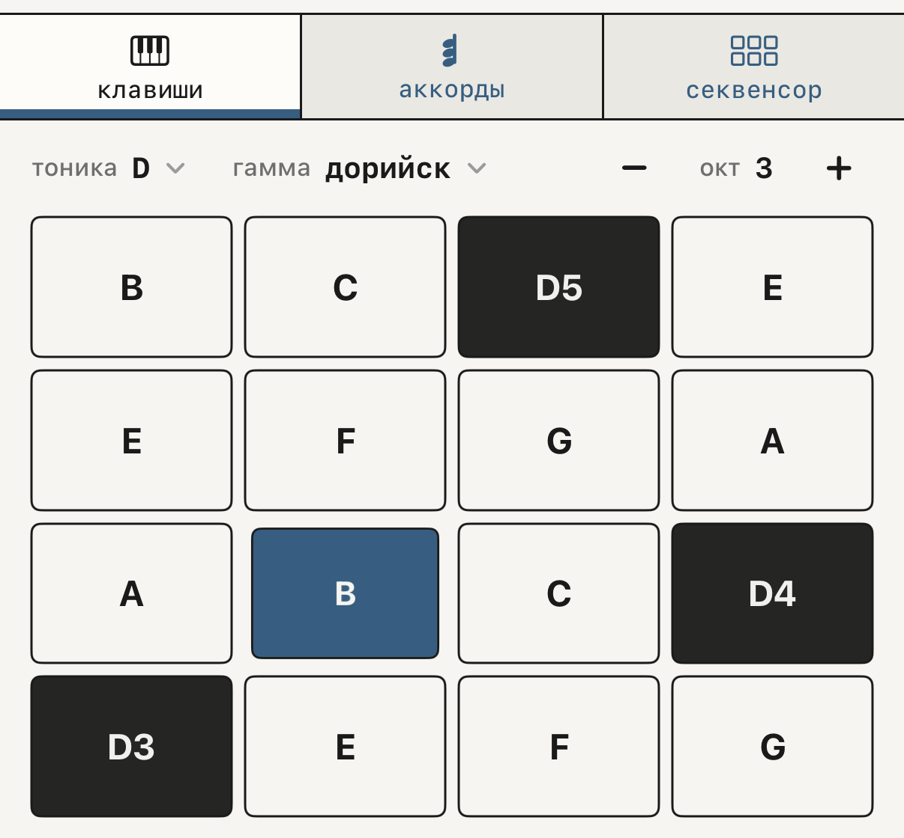
клавиши: тоника, гамма и клавиатура.Аккорды
аккорды кладёт по аккорду на каждый пэд, и у них два режима.
В гамма восемь пэдов, по одному на каждую ступень гаммы. Удерживайте модификатор, например 7, 9 или sus, и пэд, которого вы коснётесь, сыграет другой аккорд. Если коснуться модификатора и отпустить его, не трогая пэд, он останется включённым, пока вы не коснётесь его снова.
Аккорды звучат в тесном расположении, с нотами в середине клавиатуры и без баса. Если нужно ниже или выше, переключите октаву кнопками − и +.
В свой два банка по восемь пэдов, и аккорды вы собираете сами. Коснитесь ред. или пустого пэда и играйте на клавиатуре. Каждая нота добавляется в аккорд, до восьми. Потом нажмите сохранить.
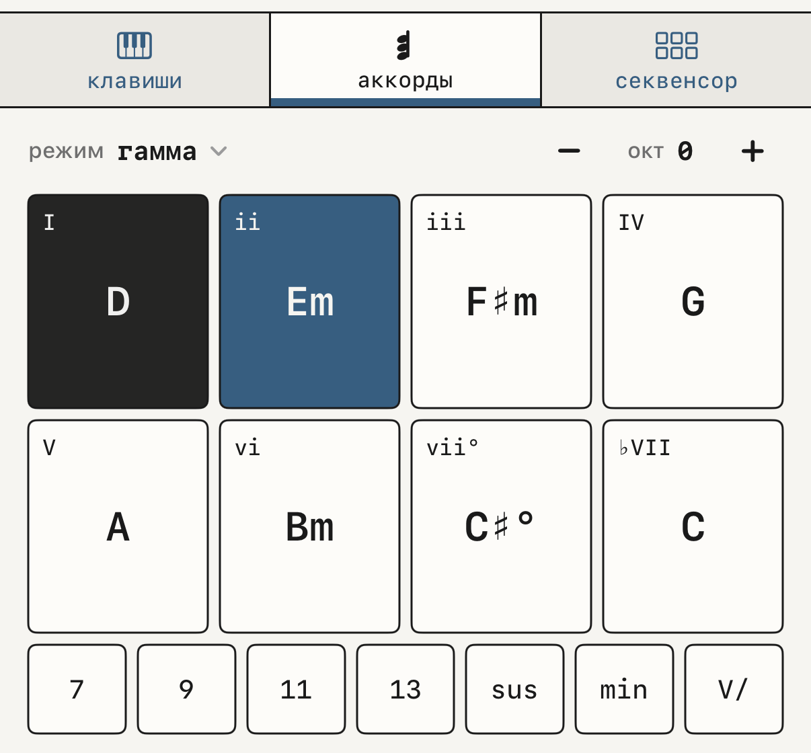
аккорды в режиме гамма, со строкой модификаторов.Секвенсор
У секвенсор пять положений: выкл · арп · шаг · пинг · эвкалипт. Положение выбирается названием в левом верхнем углу.
арпарпеджирует то, что вы держите вклавишиили ваккорды, по кольцу из 16 шагов.шагэто пошаговый секвенсор до 64 шагов, страницами по 16. Коснитесь шага, чтобы перейти к нему и записать. Двойное касание его стирает.пингэто бильярдный стол с колокольчиками. Касание ставит колокольчик, а движение пальцем запускает шар. Звучит каждый колокольчик, через который проходит шар. Осторожно, затягивает.эвкалиптэто вращающийся нотный ролл. О нём сразу ниже.
Если поставить выкл, последнее, что у вас было, сохранится до вашего возвращения.
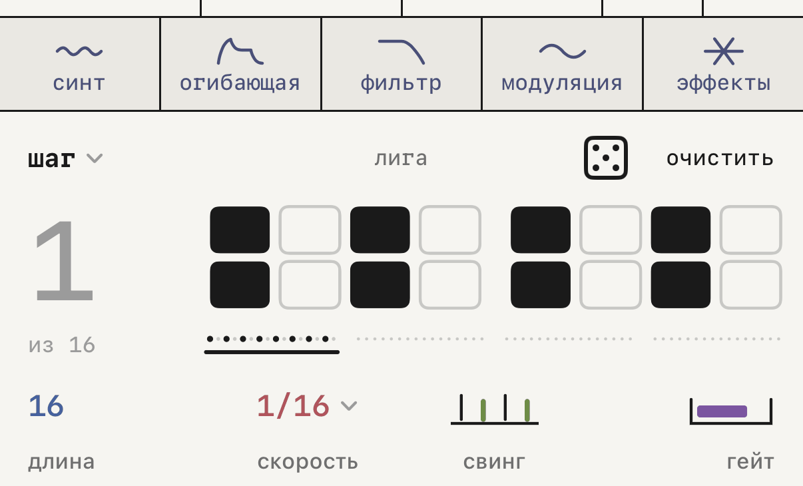
шаг с несколькими записанными шагами.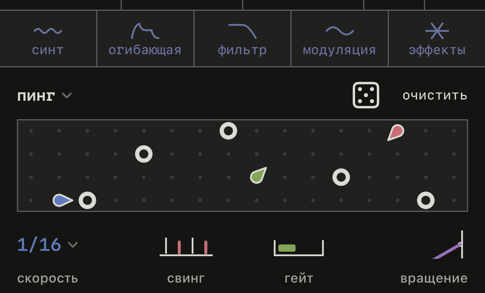
пинг: шары отскакивают между колокольчиками.Эвкалипт
эвкалипт это пиано-ролл по кругу. Вы заполняете его, играя или рисуя ноты, а когда нравится, как звучит, впечатываете на плёнку.
Под роллом есть пуск · запись · длина · печать. пуск запускает его. Когда включена запись, всё, что вы играете в клавиши, аккорды или kit, записывается в ролл, и на каждом круге можно добавлять ещё. длина задаёт, сколько тактов он длится. Размер берётся с плёнки.
Коснитесь ролла, чтобы открыть его крупно. Сверху цикл, привязка и квант. Снизу карандаш для рисования нот, сила и шанс для силы и вероятности каждой ноты, и отмена. Сведите или разведите пальцы, чтобы изменить масштаб. [] снова показывает его целиком.
печать записывает ровно один круг ролла на взведённую дорожку. Запись начинается с тактовой черты, ближайшей к курсору. Если впечатать два раза подряд, второй круг встанет сразу за первым. Плёнка при этом должна стоять.
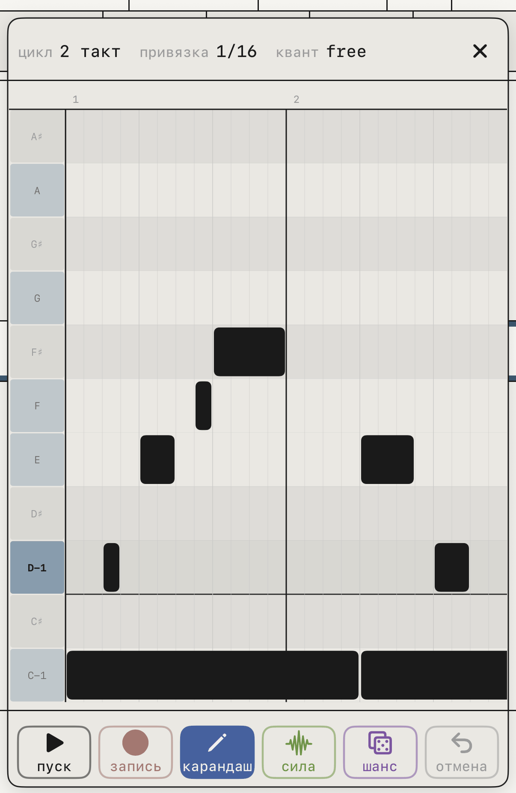
эвкалипт, открытый крупно, с цикл, привязка и квант сверху.Kit
kit это драм-машина. В ней 24 пэда в двух банках, A и B. Коснитесь пэда, чтобы выбрать его, и сверху откроется его звук с клавишами вход · гейт · норм · реверс · резка.
Коснитесь пустого пэда, чтобы загрузить звук. Звук можно взять из вашей папки звуков (папка), из файлов (файлы, аудио или видео), с микрофона (микрофон) или с дорожки плёнки (плёнка).
чоп режет звук по отмеченным точкам и раскладывает куски по свободным пэдам. Точки разреза можно отмечать и касаясь пэдов во время воспроизведения. норм поднимает громкость звука до его пика.
Чтобы очистить пэд, откройте вход и коснитесь очистить. отмена вернёт звук на пэд. Если удалить звук из библиотеки, он исчезнет отовсюду, в том числе из пэдов и пресетов, которые его используют.
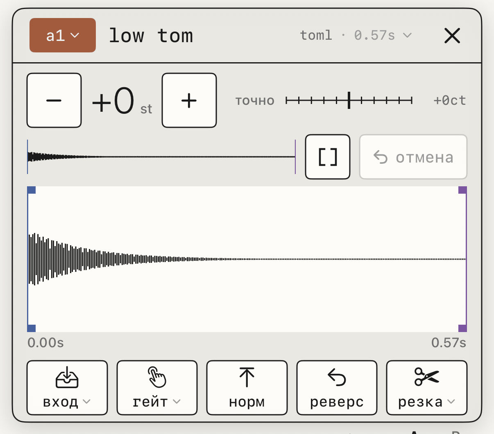
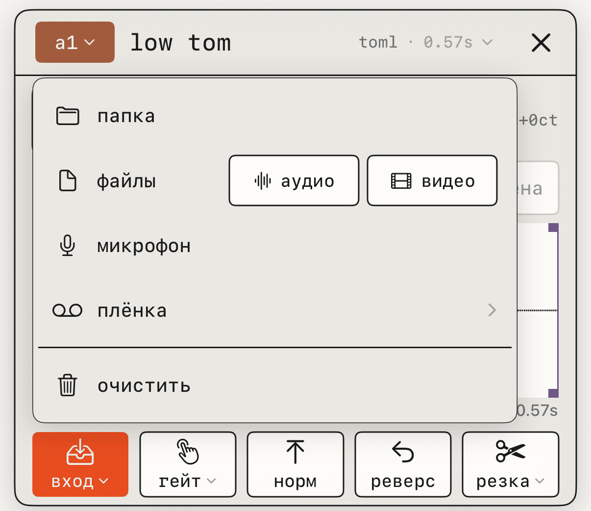
Микс
Здесь вы выравниваете дорожки и добавляете эффекты. У микса четыре вкладки: fx 1 · fx 2 · микс · eq.
Канальные линейки
В микс по линейке на каждую дорожку, и все помещаются на экране.
входэто входное усиление. Оно действует при записи.панорамаставит дорожку левее или правее.sd1иsd2посылают дорожку наfx 1иfx 2.- У фейдера есть индикатор уровня, а
mглушит дорожку.
Над линейками находится драйв. Он толкает весь микс в лимитер. Чем выше, тем плотнее звучит микс. Диапазон от −12 до +12 dB.
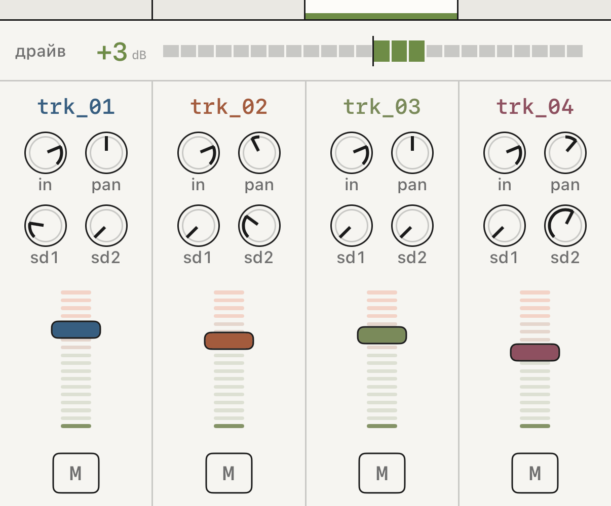
микс с драйв сверху.Эффекты
fx 1 и fx 2 это два общих эффекта. Каждая дорожка посылает на них сколько нужно через sd1 и sd2. Коснитесь пустой шины, чтобы выбрать тейпсат · дилей · реверб · дробление · дымка · качание · мерцание, или плагины, чтобы использовать AUv3 из другого приложения.
У каждого эффекта четыре регулятора от 00 до 99. Двигайте их пальцем по вертикали, а двойное касание возвращает значение по умолчанию. Сверху три клавиши.
активенвыключает эффект, ничего не теряя.возвратподнимает или опускает его уровень.заменитьменяет его на другой.
Почти все эффекты добавляются к дорожке, и она продолжает звучать как прежде. дробление, дымка и качание работают иначе. Когда вы поднимаете посыл, дорожка теряет часть исходного звука, а на максимуме посыла слышен только эффект.
Пока вы играете, взведённая дорожка звучит со своими эффектами. Дубль записывается без эффектов, поэтому их можно поменять потом.
Регуляторы каждого эффекта описаны в карточках эффектов.
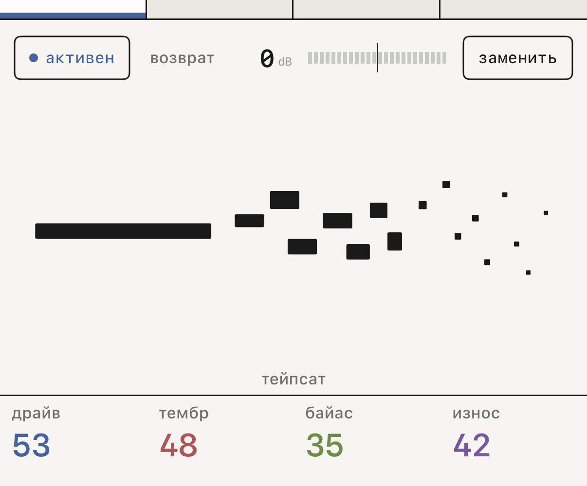
fx 1 с тейпсат и его четырьмя регуляторами.Плагины других приложений
Выберите плагины на шине, и вы увидите установленные AUv3, сгруппированные по производителю. открыть ui открывает интерфейс плагина. На iPad он появляется в плавающем окне, размер которого можно менять. Темп синхронизируется сам, а состояние плагина сохраняется вместе с плёнкой.
Мастер-эквалайзер
eq это кривая на весь экран с четырьмя фиксированными полосами: low 150 Hz · body 400 Hz · pres 2.5 kHz · air 8 kHz. Тяните по вертикали над полосой, чтобы поднять или опустить её, до 8 dB. Двойное касание снова делает кривую ровной.
Сведите или разведите два пальца, чтобы масштабировать все четыре полосы сразу. Отдельный переключатель выключает весь eq, не теряя кривую.
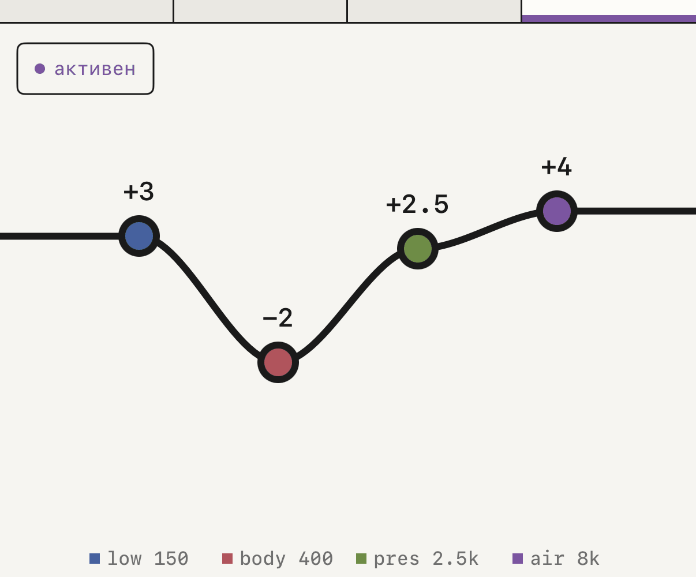
Путь сигнала
Каждая дорожка проходит через свою линейку и свои посылы. Потом всё сходится вместе и перед выходом проходит через драйв, через eq и через лимитер.
Всё, что вы поднимаете в eq, тоже толкает сигнал в лимитер. Отдельные дорожки при экспорте проходят через драйв и eq, но не через лимитер.
Плёнки и экспорт
Каждый проект это плёнка со своими дорожками и своим миксом. Когда она готова, вы сохраняете её в файл.
Ваши плёнки
Коснитесь проект в шапке, чтобы открыть плёнки. Там создаётся новая плёнка, а в строке каждой плёнки её можно дублировать, переименовать или удалить. Удаление нужно подтвердить, и оно необратимо.
Каждая плёнка хранит свои дорожки, темп, размер, луп, эффекты и микс. Новая плёнка начинается с 120 BPM и с тем числом дорожек, которое задано в дорожки в настройках.
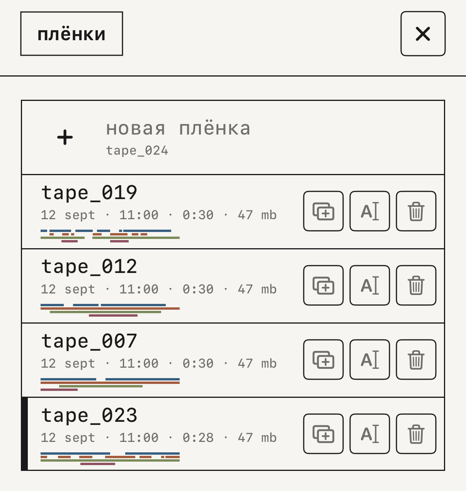
Экспорт
Коснитесь значка извлечения в шапке. В панели три выбора.
выход:мастер, то есть весь микс, илистемы, по файлу на дорожку.формат:wav(24 бита, без потерь) илиm4a(со сжатием).диапазон: всяплёнкаили один круг вашего лупа,цикл.
Нажмите извлечь, и файл уйдёт через меню «Поделиться» iOS в Файлы, AirDrop или другое приложение.
Экспорт звучит так же, как воспроизведение. В мастер заглушённые дорожки не звучат и работает лимитер. В стемы каждый файл содержит полный звук дорожки, даже если она заглушена.
Если плёнка заканчивается хвостом реверба или дилея, экспортируется до 12 секунд сверх того. В цикл до 2 секунд этого хвоста накладываются на начало, чтобы круг замыкался без скачка.
Синтезатор попадает в экспорт, только если вы записали его на дорожку. Как это сделать, описано в разделе запись синтезатора.
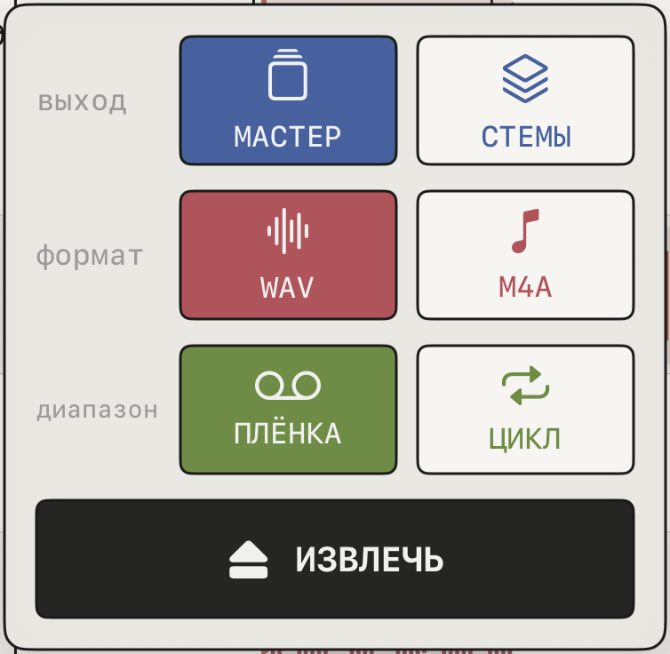
извлечь.С другими приложениями
Как связать TapeDesk с другими приложениями и MIDI-устройствами.
Синхронизация темпа
В настройки ▸ синхр. есть два способа делить темп с другими.
midi-клок отправляет ваш темп через выход или следует за темпом другого устройства через вход, вместе со стартом и остановкой. Работает по USB, по Bluetooth и по сети.
link открывает панель Ableton Link, чтобы играть в одном темпе с другими приложениями в вашей сети. Когда включён link, midi-клок выключается и блокируется.
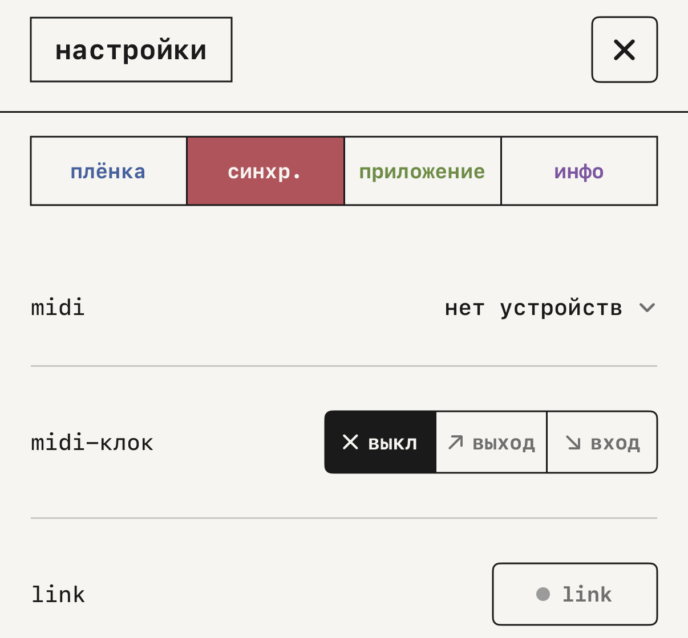
midi-клок и link в настройках синхронизации.Игра с MIDI-клавиатуры грувбокс
Подключите MIDI-клавиатуру по USB, Bluetooth или по сети, и она сразу играет на синтезаторе. По умолчанию слушаются все каналы. Устройство и канал можно выбрать в настройки ▸ синхр. ▸ midi. Поддерживаются сустейн и pitch bend.
TapeDesk также появляется как MIDI-порт для других приложений на том же устройстве, например AUM или Drambo.
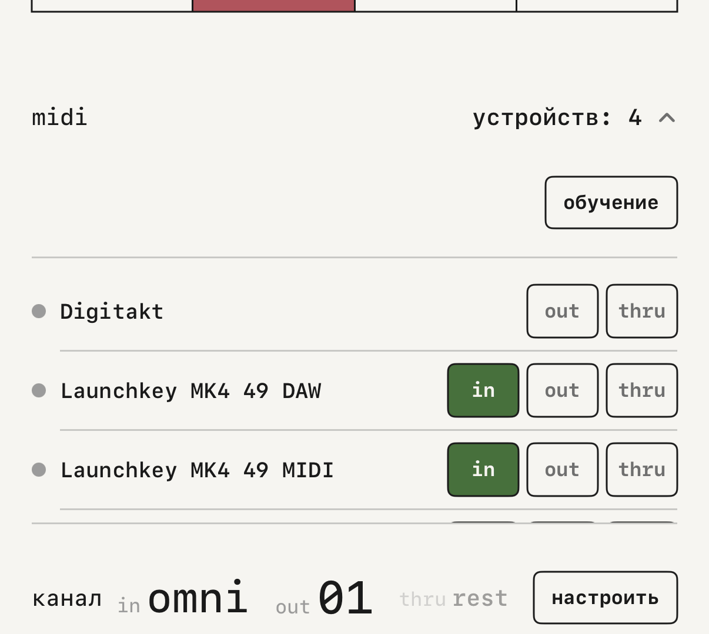
MIDI learn
С помощью обучение вы назначаете ручку своего контроллера почти любому элементу управления приложения. Транспорт, фейдеры, панорама, посылы, мьют, регуляторы эффектов и полосы eq.
Включите его в настройки ▸ синхр. ▸ midi. На каждом назначаемом элементе появляется плашка set. Коснитесь плашки и покрутите физическую ручку. Назначение готово. Нажмите готово, чтобы выйти.
Назначать можно и макро синтезатора, и переключение пресетов.
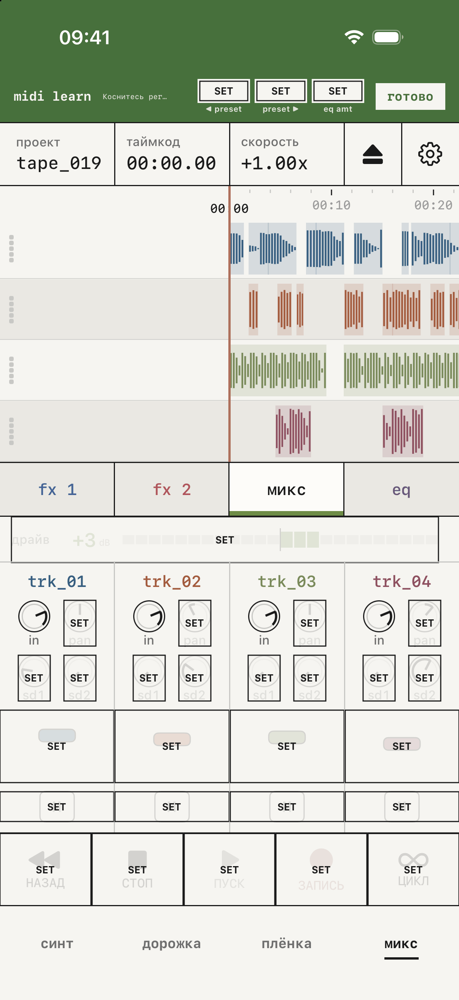
обучение включено, плашки поверх микса.TapeDesk как плагин
TapeDesk открывается и как плагин AUv3 внутри другого приложения. TapeDesk: Tape это плёнка со своим миксом, и её плёнки те же, что вы видите в приложении.
Сверху есть клок с двумя вариантами.
hostвыбран по умолчанию. Вы нажимаетеготов, и запись запускается кнопкой play хоста. Темп задаёт хост.плёнкадаёт полный транспорт и собственный темп.
В режиме host плёнку тоже можно двигать. Перетащите её в нужное место и отпустите. Оттуда она продолжит стартовать и останавливаться вместе с хостом. Это удобно с клиповыми хостами, у которых нет таймлайна и которые никогда не возвращаются в ноль. Если переключиться на плёнка и обратно на host, плёнка снова пойдёт вместе с хостом.
С источники плагин принимает до шести входов от хоста, каждый на ту дорожку, которую вы укажете. Все они пишутся одновременно, в том числе в лупе и с порогом. сквозной пропускает вход хоста на выход. Хост может автоматизировать весь микс.
TapeDesk: Tape внутри хоста.TapeDesk: Play грувбокс
TapeDesk: Play это синтезатор в виде инструмента внутри другого приложения. Он принимает от хоста ноты, сустейн и pitch bend и отдаёт 37 параметров для автоматизации.
Звук сохраняется вместе с сессией хоста. Пресеты, гаммы и картриджи DX те же, что в приложении.
TapeDesk: Play внутри хоста, с открытой клавиатурой.Карточки
Здесь регуляторы каждого движка и каждого эффекта, настройки, указатель и лицензии. Читать подряд не обязательно.
Движки грувбокс
Одиннадцать движков синтеза построены на Plaits Эмили Жилле (Mutable Instruments). sample и kit играют сэмплы.
drift
аналоговый рой, стерео
дрейф- от неподвижного роя к меняющемуся облаку
рой- сколько голосов
расцвет- расстройка к центру
ширина- расстройка в стороны, больше стерео
poly
виртуальный аналог
форма- от тёплого звука к жёсткому, как у hard sync
плотность- толщина пилы
тембр- яркость
голос- интервал для каждого голоса: унисон, квинта, октава или октава с квинтой
fold
фолдинг волны
сгиб- сколько складывать волну
форма- исходная волна
изгиб- внизу тепло, вверху металл
движение- медленный LFO, от которого фолдинг дышит
fm
двухоператорная FM
индекс- от синуса к колоколу и к лязгу
интервал- интервал между операторами, ступенями
резкость- обратная связь, от чистого звука до жужжания
наплыв- раздувает звук после атаки
pluck
щипковая струна, затухает сама
щипок- яркость щипка
глушение- сколько длится звук
тембр- от тёплого к металлическому
корпус- резонанс корпуса
mallet
настроенная перкуссия, затухает сама
удар- жёсткость удара
звон- сколько длится звук
тембр- от тёмного к металлическому
мерцание- яркость верхних гармоник
wave
wavetable
скан- положение в таблице
форма- семейство волн
квант- от чистого звука к lo-fi
развитие- сам проходит по таблице
cz
фазовые искажения
пик- глубина резонанса
форма- форма окна
обертон- гармоника резонанса, ступенями
свип- проход форманты на каждой ноте
ensemble
string machine, стерео
ансамбль- сколько хоруса
регистр- от пилы к меандру
воздух- открытие фильтра в зависимости от ноты
вибрато- вибрато на каждой ноте
noise
шум и текстура
зерно- от хрустящих ступенек до шипения
пик- резонанс фильтра
окрас- ФНЧ, полосовой или ФВЧ
порыв- порывы на каждой ноте, которые никогда не повторяются
dx
шестиоператорная FM, затухает сама
патч- один из 32 патчей банка
мод- глубина LFO патча
яркость- яркость
растяжка- растягивает или сжимает огибающие
Картриджи .syx загружаются через импорт .syx в картридж dx.
sample
клавишный сэмплер
нота- настоящая нота сэмпла
Коснитесь формы волны, чтобы обрезать её и отметить луп.

Инсерты грувбокс
У каждого движка есть свой эффект на вкладке эффекты. Он работает внутри звука, нота за нотой.
хорус
скорость- скорость
глубина- глубина
повторы- обратная связь, в минус звук становится полым, в плюс резонирует
голоса- от 1 до 4 голосов
дилей- базовая задержка, короткая даёт блеск, длинная звучит как вибрато
ширина- ширина стерео
микс- баланс
драйв
тот же движок, что у тейпсат
усиление- сколько сатурации, с компенсацией громкости
тембр- фильтр после сатурации
байас- асимметрия
край- ещё больше сатурации
характер- ещё одна настройка асимметрии
микс- баланс
выход- выходной уровень, ±12 dB
фейзер
скорость- скорость прохода
глубина- размах прохода
повторы- резонанс, от воздушного звука к вокальному
ступени- от 2 до 12 ступеней
центр- центр прохода
ширина- сдвиг фазы между левым и правым каналом
микс- насколько заметны провалы
дилей
тот же движок, что у дилей микса
время- до 1.2 s или доли темпа с
синхр. повторы- повторы
тембр- затемняет каждый повтор
пинг-понг- чередует повторы между левым и правым каналом
синхр.- привязывает
времяк темпу мод- плавание плёнки
микс- баланс
простор
тот же движок, что у реверб микса
размер- размер
спад- длина хвоста
глушение- как гаснут высокие
тембр- яркость
мод- звон пружины
микс- баланс
грязь
фузз
усиление- вход фузза
сгиб- фолдинг волны
байас- больше фузза в одну сторону и тишина в другую
дробление- понижает частоту дискретизации до 300 Hz
тембр- фильтр после дробления
микс- баланс
выход- выходной уровень, ±12 dB
au
эффект AUv3 из другого приложения
возврат- уровень эффекта, ±12 dB
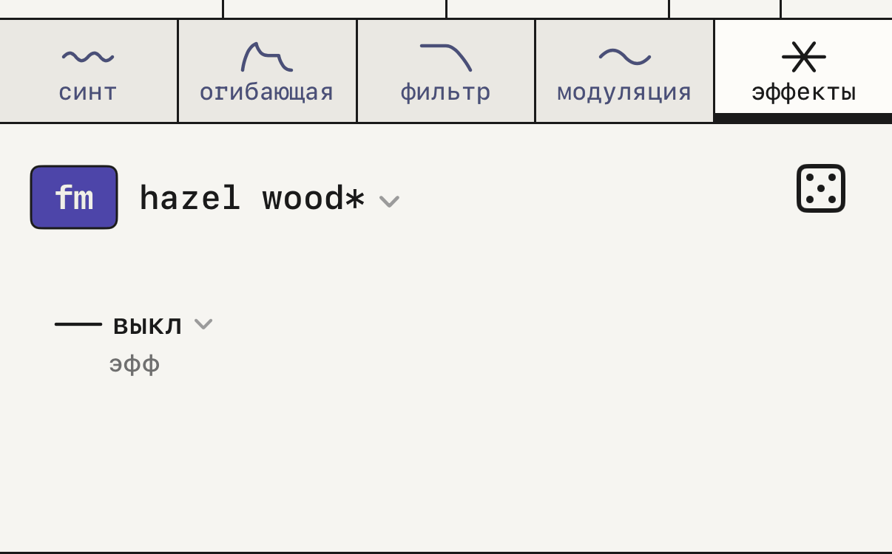
эффекты с загруженным простор.Эффекты микса
Эффекты, которые загружаются в fx 1 и fx 2.
тейпсат
сатурация плёнки, добавляется
драйв- насколько сильно сигнал давит на плёнку, с компенсацией громкости
тембр- завал верхов, от 200 Hz до 20 kHz
байас- асимметрия, добавляет чётные гармоники
износ- от новой плёнки к старой кассете, с шипением, а потом с детонацией
дилей
ленточное эхо, добавляется
время- от 30 до 750 ms. Если его двигать, эхо плавно съезжает
повторы- повторы
тембр- затемняет каждый повтор
детонация- плавание задержки
реверб
восемь линий с обратной связью, добавляется
спад- длина хвоста
тембр- яркость помещения
капли- звон пружины
глушение- как гаснут высокие в хвосте
дробление
меньше частота дискретизации и меньше бит, заменяет
скорость- от 48 kHz до 1.5 kHz
биты- от 16 до 3
зерно- от ступенек к шуму
тембр- фильтр верхов
дымка
движущийся фильтр, заменяет
частота- исходный срез, от 80 Hz до 8 kHz
ход- влево им управляет сигнал, вправо LFO
рез- резонанс, у максимума самовозбуждается
форма- от ФНЧ к полосовому и к фейзеру
С free LFO идёт от 0.1 до 8 Hz. С sync он следует темпу.
качание
плавание плёнки, заменяет
глубина- насколько сильно плавает высота
скорость- от 0.1 до 8 Hz
форма- от синуса к случайному блужданию
провал- провалы уровня и верхов
мерцание
реверб с октавой, добавляется
мерцание- сколько октавы подаётся обратно
размер- длина хвоста
тембр- от яркого к тёмному
расцвет- как долго нарастает облако
Ниже выбирается интервал, от −12 до +12. По умолчанию +12.
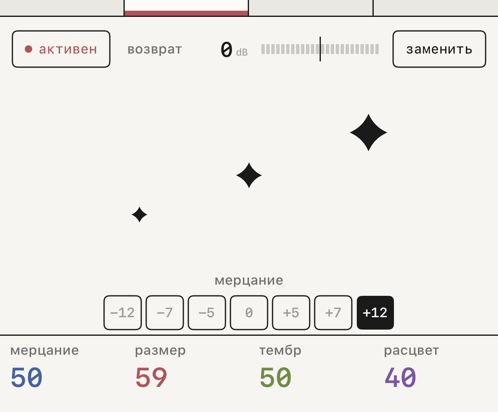
мерцание с выбором интервала.Настройки
Шестерёнка в шапке открывает настройки с четырьмя вкладками.
плёнка
дорожки- сколько дорожек на плёнке, от 4 до 6
tempo- колесом или отстукиванием
размер- размер плёнки
отсчёт- отсчёт перед записью
метроном- включает клик
режим записидабилизаменапанель правки- каким жестом она открывается
регионы- как рисуются дубли
синхр.
midi- устройства,
обучение,канал,seq,смещение вых.,беспроводнойипаника midi-клоквыкл·выход·входlink- открывает Ableton Link
приложение
режиммагнитофонилигрувбокстемасветлая·тёмная·автосила нажатия- насколько учитывается удар при игре на клавишах и пэдах, от 0 до 5
язык- пятнадцать языков, меняется сразу
микрофон- состояние разрешения
качествостудияпишет в 24 бита, адемов 16, это занимает меньше местахранилище- сколько места занимает TapeDesk
иконка- cream · dark · olive · wine
инфо
данные не собираются- ссылка на политику конфиденциальности
справка- открывает это руководство
скорость- чтобы оценить приложение
помощь- чтобы написать нам
Внизу версия и благодарности авторам звуков и Plaits.
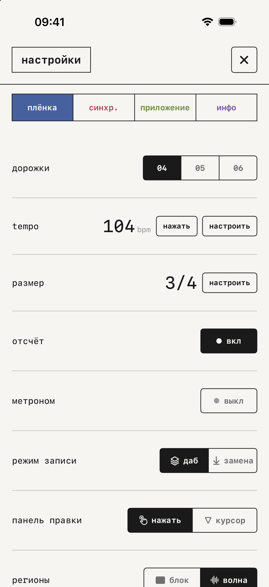
плёнка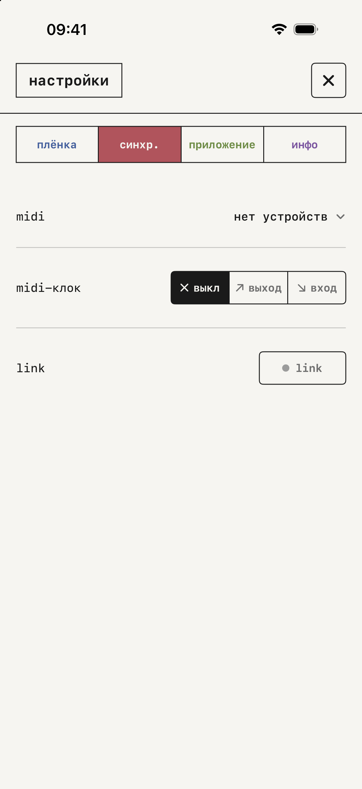
синхр.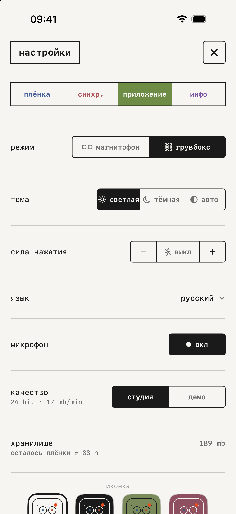
приложение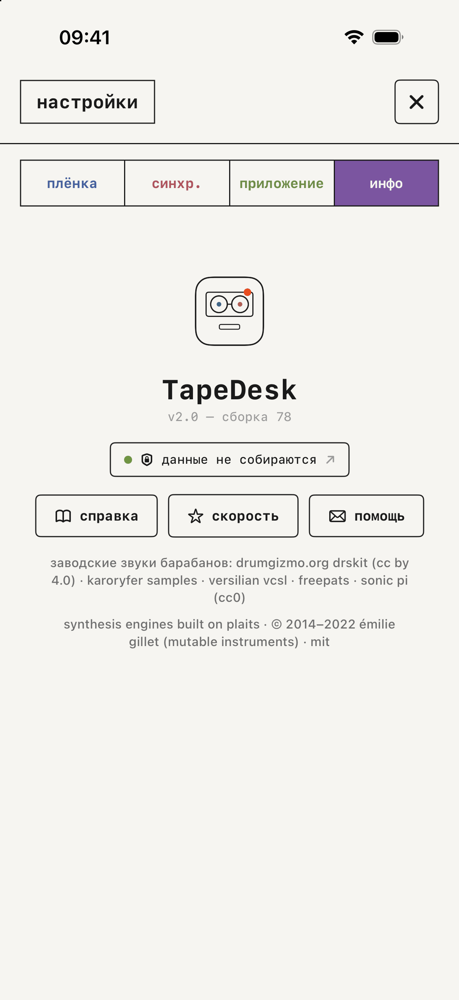
инфоУказатель терминов
au· плагины других приложенийeq· мастер-эквалайзерfx 1иfx 2· эффектыkit· kitlink· синхронизация темпаmidi-клок· синхронизация темпаsafe· несколько источников сразуTapeDesk: Play· TapeDesk: PlayTapeDesk: Tape· TapeDesk как плагинаккорды· аккордыактивен· эффектыарп· секвенсорвозврат· эффектывставка· панель правкигрувбокс· два режимадаб· взвести и записатьдорожки· дорожкидрайв· канальные линейкизамена· взвести и записатьзаменить· эффектызапись· взвести и записать- звук каждой дорожки · звук каждой дорожки
извлечь· экспортисточник· запись синтезатораисточник → дорожка· несколько источников сразуисточники· несколько источников сразу, TapeDesk как плагинклавиши· клавишиклок· TapeDesk как плагинмагнитофон· два режимамастер· экспортмикс· канальные линейкиназад· перемещение по плёнкенорм· kitобучение· midi learnоткрыть ui· плагины других приложенийотменаиповтор· панель правкиотменить· дорожкиотсчёт· взвести и записатьпечать· эвкалиптпинг· секвенсорплагины· плагины других приложенийплёнки· ваши плёнки- порог · запись, которая начинается сама
проект· ваши плёнкипуск· первый дубльреверс· панель правкирежим записи· взвести и записатьсвести· свести две дорожки в однусеквенсор· секвенсорсинт· выбор звукасквозной· TapeDesk как плагинскорость· скорость←слитьислить→· панель правкиснять· панель правкистемы· экспортстопдва раза · взвести и записатьцикл· луп, живой луперчоп· kitшаг· секвенсорэвкалипт· эвкалипт
Лицензии
Встроенные звуки kit взяты из DrumGizmo.org DRSKit (CC BY 4.0), Karoryfer Samples, Versilian VCSL, FreePats и Sonic Pi (CC0).
Одиннадцать движков синтеза построены на Plaits Эмили Жилле (Mutable Instruments), под лицензией MIT. Copyright 2014–2022 Émilie Gillet. Лицензия требует, чтобы её текст распространялся вместе с программой, поэтому он приведён здесь.
Permission is hereby granted, free of charge, to any person obtaining a copy of this software and associated documentation files (the "Software"), to deal in the Software without restriction, including without limitation the rights to use, copy, modify, merge, publish, distribute, sublicense, and/or sell copies of the Software, and to permit persons to whom the Software is furnished to do so, subject to the following conditions:
The above copyright notice and this permission notice shall be included in all copies or substantial portions of the Software.
THE SOFTWARE IS PROVIDED "AS IS", WITHOUT WARRANTY OF ANY KIND, EXPRESS OR IMPLIED, INCLUDING BUT NOT LIMITED TO THE WARRANTIES OF MERCHANTABILITY, FITNESS FOR A PARTICULAR PURPOSE AND NONINFRINGEMENT. IN NO EVENT SHALL THE AUTHORS OR COPYRIGHT HOLDERS BE LIABLE FOR ANY CLAIM, DAMAGES OR OTHER LIABILITY, WHETHER IN AN ACTION OF CONTRACT, TORT OR OTHERWISE, ARISING FROM, OUT OF OR IN CONNECTION WITH THE SOFTWARE OR THE USE OR OTHER DEALINGS IN THE SOFTWARE.